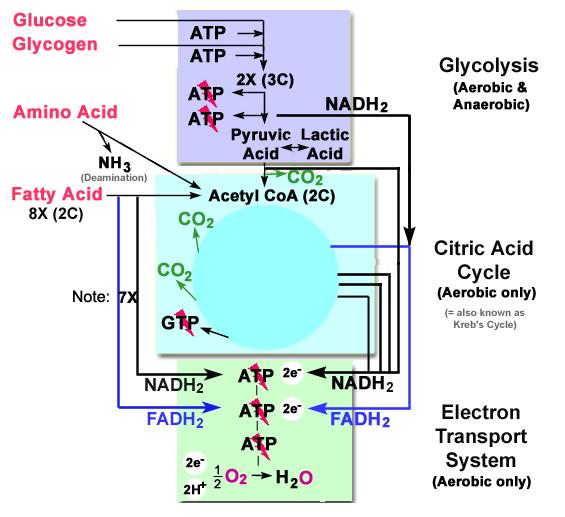

Energy in the brain
Energy production
The main source of energy for cells is adenosine tri-phosphate (ATD). This nucleotide contains 3 phosphate groups and energy is released when one phosphate group is removed by the insertion of a water molecule, in a reaction called hydrolysis. ATP is produced from different substance as glucose, fatty acids or ketone bodies. The main source is however the glucose, usually stored in our cells in the form of glycogen. The main problem for neurons, is that very few glycogen is stored. Thus, neurons need a continuous supply of oxygen and glucose, which is supplied by the blood. Under normal circumstances, the brain extracts about 10% of the arterial blood glucose.
The generation of ATP from glucose, in the neurons, has 3 primary steps:
- the glycolysis: the glucose is broken down into 3 carbon sugars, which are then catabolized into pyruvate. Glycolysis produces 2ATP. given the reaction C6H12O6+2ATP = Pyruvic Acid + 2H2O + 4ATP.
- the TCA (or Krebs) cycle: in the presence of oxygen the reaction continues (aerobic glycolysis) with an oxidation of the pyruvate.
- the electron transport chain: a network of proteins in the cell mitochondria passes electrons across a series of compounds to release energy used by the ATP synthase enzyme to generate 34ATP. The whole equation for aerobic glycolysis is thus C6H12O6 + 6O2 + 2ATP = 6CO2 + 6H2O + 36ATP.
Without oxygen, the glucose transformation is called anaerobic glycolysis and the pyruvate is transformed in lactate (neither TCA cycle nor electron transport chain). The glycolysis is a very fast process whereas the subsequent pyruvate oxydation is slow. The anaerobic glycolysis is thus an easy and fast way to produce energy but with a cost, i.e. the accumulation of lactate. However, it exists some cells that can transform back the lactate into pyruvate and use it as fuel for the TCA cycle and the production of ATP.

Figure 1. Outline of the energy production
Energy consumption
The grey matter consumes about 30 to 50 micro-mol of ATP every min for each gram of tissue. According to Attwell and Laughtin (2001), the integrative and signalling activity in neurons accounts for about 75% the energy consumption in the grey matter whereas the housekeeping function would account for the other 25%. Analyzes performed on the rodent brain showed that 81% of the energy was for the restoration of membrane gradient (47% following action potentials and 34% after EPSP and IPSP). The maintenance of the resting membrane potentials was estimated at 13% of the energy consumption. Finally, about 3% of the whole energy budget corresponds to the uptake, breakdown and repacking of glutamate and another 3% for restoring Ca2+ fluxes in presynaptic membranes.